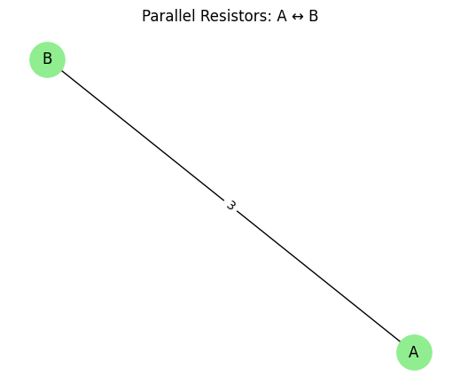
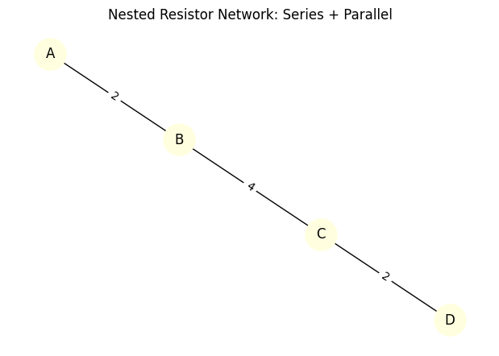

Problem 1
Equivalent Resistance Using Graph Theory
Motivation
Calculating equivalent resistance is a fundamental problem in analyzing electrical circuits. While it's easy to reduce simple circuits using series and parallel rules, this becomes extremely difficult for large or nested resistor networks.
Graph theory offers a powerful, systematic approach for simplifying electrical circuits. In this approach:
- Nodes represent junctions
- Edges represent resistors, with edge weights as resistance values
This allows for automated reduction and enables complex real-world applications such as:
- Electrical network simulation
- Optimization of energy efficiency
- Real-time fault diagnosis
- Integration into circuit design software
Theoretical Framework
We represent a circuit as an undirected graph:
- Each edge is a resistor with resistance \( R \in \mathbb{R}^+ \)
- Each node is a junction or connection point
To simplify the circuit, we use:
Series Rule
If a node has degree 2 (i.e. connected to only two other nodes), and it's not a terminal node, then the resistors connected to it are in series:
Parallel Rule
If two or more resistors connect the same pair of nodes, they are in parallel:
Graph Simplification Algorithm
We reduce the graph step by step:
- Identify nodes of degree 2 and combine adjacent edges using the series rule
- Detect parallel edges between the same nodes and combine them using the parallel rule
- Repeat until the graph contains a single edge between the source and the target node
Python Implementation (Task 2)
Below is the full Python implementation using networkx for graph modeling and matplotlib for visualization.
import networkx as nx
import matplotlib.pyplot as plt
def draw_graph(G, title="Circuit Graph"):
pos = nx.spring_layout(G)
edge_labels = nx.get_edge_attributes(G, 'resistance')
nx.draw(G, pos, with_labels=True, node_color='lightblue', node_size=1000)
nx.draw_networkx_edge_labels(G, pos, edge_labels=edge_labels)
plt.title(title)
plt.show()
def simplify_circuit(G):
changed = True
while changed:
changed = False
# Series reduction
for node in list(G.nodes):
if G.degree[node] == 2 and len(G.nodes) > 2:
neighbors = list(G.neighbors(node))
if len(neighbors) == 2:
r1 = G[node][neighbors[0]]['resistance']
r2 = G[node][neighbors[1]]['resistance']
req = r1 + r2
G.add_edge(neighbors[0], neighbors[1], resistance=req)
G.remove_node(node)
changed = True
break
# Parallel reduction
to_merge = {}
for u, v, data in G.edges(data=True):
key = tuple(sorted((u, v)))
if key in to_merge:
to_merge[key].append(data['resistance'])
else:
to_merge[key] = [data['resistance']]
for (u, v), resistors in to_merge.items():
if len(resistors) > 1:
inv_total = sum(1 / r for r in resistors)
req = 1 / inv_total if inv_total != 0 else float('inf')
G.remove_edges_from([(u, v)] * len(resistors))
G.add_edge(u, v, resistance=req)
changed = True
break
return G
def equivalent_resistance(G, source, target):
if G.has_edge(source, target):
return G[source][target]['resistance']
return float('inf')
Examples & Results
Example 1: Simple Series
````phyton G1 = nx.Graph() G1.add_edge('A', 'B', resistance=5) G1.add_edge('B', 'C', resistance=10)
draw_graph(G1, "Before: Series Combination") simplified_G1 = simplify_circuit(G1) draw_graph(simplified_G1, "After: Series Reduced") print("Equivalent Resistance (A–C):", equivalent_resistance(simplified_G1, 'A', 'C'), "Ω")

### Example 2: Simple Parallel
````phyton
G2 = nx.MultiGraph()
G2.add_edge('A', 'B', resistance=6)
G2.add_edge('A', 'B', resistance=3)
G2 = nx.Graph(G2)
draw_graph(G2, "Before: Parallel Combination")
simplified_G2 = simplify_circuit(G2)
draw_graph(simplified_G2, "After: Parallel Reduced")
print("Equivalent Resistance (A–B):", equivalent_resistance(simplified_G2, 'A', 'B'), "Ω")

Example 3: Nested Combination
G3 = nx.MultiGraph()
G3.add_edge('A', 'B', resistance=2)
G3.add_edge('B', 'C', resistance=4)
G3.add_edge('B', 'C', resistance=4)
G3.add_edge('C', 'D', resistance=2)
G3 = nx.Graph(G3)
draw_graph(G3, "Before: Nested Circuit")
simplified_G3 = simplify_circuit(G3)
draw_graph(simplified_G3, "After: Nested Reduced")
print("Equivalent Resistance (A–D):", equivalent_resistance(simplified_G3, 'A', 'D'), "Ω")

Additional Interactive Resources
These tools allow you to build, explore, and analyze resistor circuits beyond theoretical models: